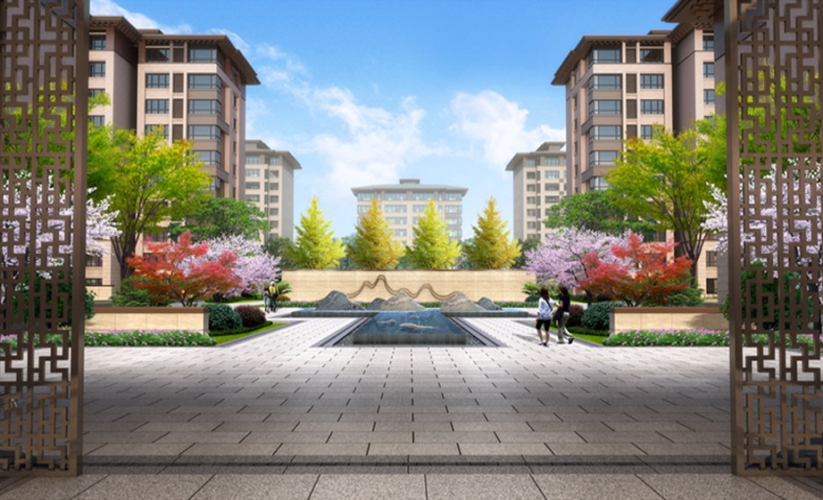
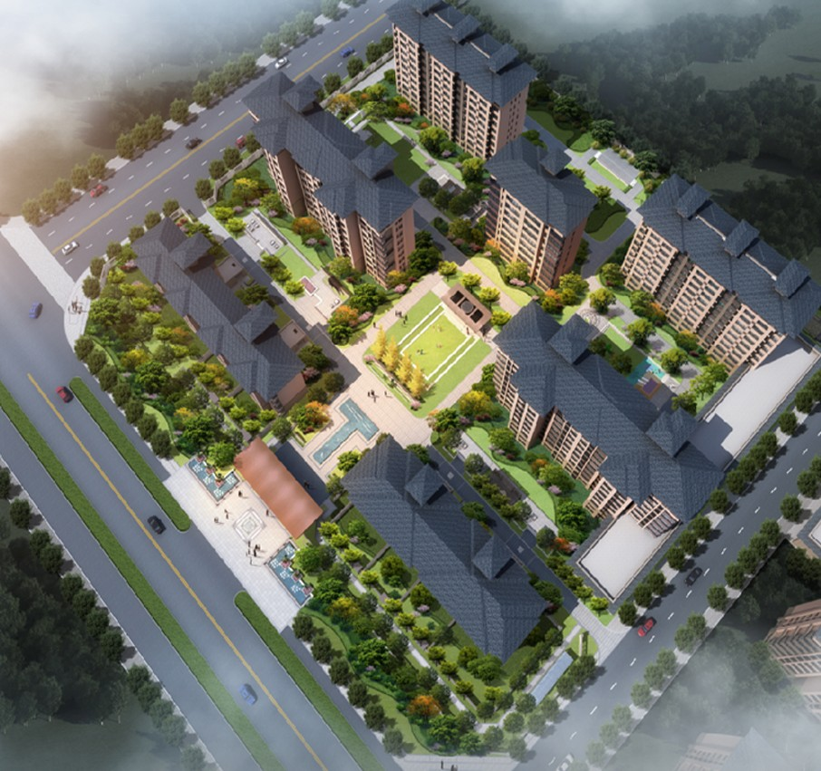

LIVING AMONG GARDENS
厚德 · 雅园
居住石家庄 · 鹿泉2019

ABOUT THE PROJECT
从归家的入口，走进有树有水的社区。
入口景观与社区内部绿地形成连续的空间序列。植物、水景和步行空间共同组织日常归家的体验。

LIVING AMONG GARDENS

ABOUT THE PROJECT
入口景观与社区内部绿地形成连续的空间序列。植物、水景和步行空间共同组织日常归家的体验。
